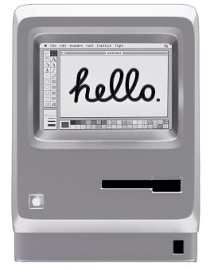
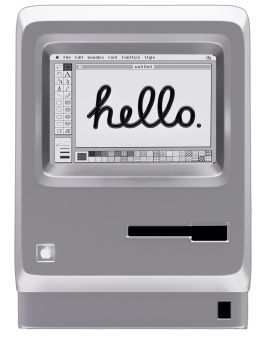

I'm Gowthaman T

Aspiring designer and

Engineer
based on India

I'm Gowthaman T
Aspiring designer and

Engineer
based on India
On a journey from developer → designer, driven by a
belief that
thoughtful design can solve real problems and empower
people effortlessly.
Scroll to know more ↓
As a Computer science engineer in college (Graduated B.E in 2021) when designing & building websites for Web development labs, watching a blank page turn into something functional and beautiful gave me happiness and that made me start my career into web development.
Early freelancing reinforced it, I would design and develop websites for hours obsessing over every pixel. I held myself to high standards. It had to look right, feel right, and work right, average wasn't acceptable. But once I started working professionally as a developer, my design side fell asleep. I was implementing designs, not creating them. Still, something felt missing.
That curiosity woke up again when I started participating in design review meetings as a senior software engineer. Giving feedback on designs, thinking about how people think and analyzing user flows reignited my drive. I began noticing everything that frustrated me about poor experiences - unclear error messages, inconsistent interfaces, inaccessible features.
Two defining moments cemented my decision to pursue design:
I've come to see that design isn't just about pixels on a screen. It's about creating experiences that empower people - making products predictable, accessible, and delightful, even when things go wrong. It's about thinking beyond the digital world, the cities, systems, rules, everything in life is designed by someone. And I want to be one of those people who makes it better.
My core principles are:
Design, for me, is about solving real user problems and creating experiences that are smooth, consistent, scalable, and above all, comfortable. As the world evolves, I'll use whatever tools that are necessary - from traditional methods to AI - to craft experiences that delight and empower people.
I don't see design as just a career, I see it as a way to provide value, make lives easier, and leave things better than I found them.
Sep 2025
Got a Spot Award for Most Valued Partner.
Aug 2025
Hackathon Winner (1st of 32 Teams) - Built custom MCP Server.
Transitioned to AI/ML team as an AI Engineer.
Exploring & implementing AI-powered solutions to enhance product experiences and solve user challenges.
Jun 2025
Got a Value Champion Award for World Class Performance.
Jan 2024
Promoted to Senior Software Engineer.
Jul 2023
Transitioned to Application team as a Full-stack Developer with Scrum Master responsibilities.
- Led development with working on technologies like Angular, MongoDB and NestJs.
- Facilitated backlog refinements, retrospectives & planning for 4-member team.
Apr 2023
Got a Spot Award for Framework contributions as Most Valued Partner.
Aug 2021
Joined Framework team as a Frontend Developer.
- Built & maintained UI Kit (Angular reusable components) adopted across all UI teams.
- Wrote unit tests, performed code reviews & ensured best practices in development.
Started as a Software engineer.
I am an experienced freelancer who knows the ins and outs of the industry, with firsthand knowledge of the highs and lows that come with it. Although I was doing this in my free time, I've had the fair share of interesting client interactions, with some humorous memories to share along the way. There has been a time where I woke up by bugs and fixing them was my first thing of the day.
Enhanced discoverability of internal libraries & boosted developer productivity.